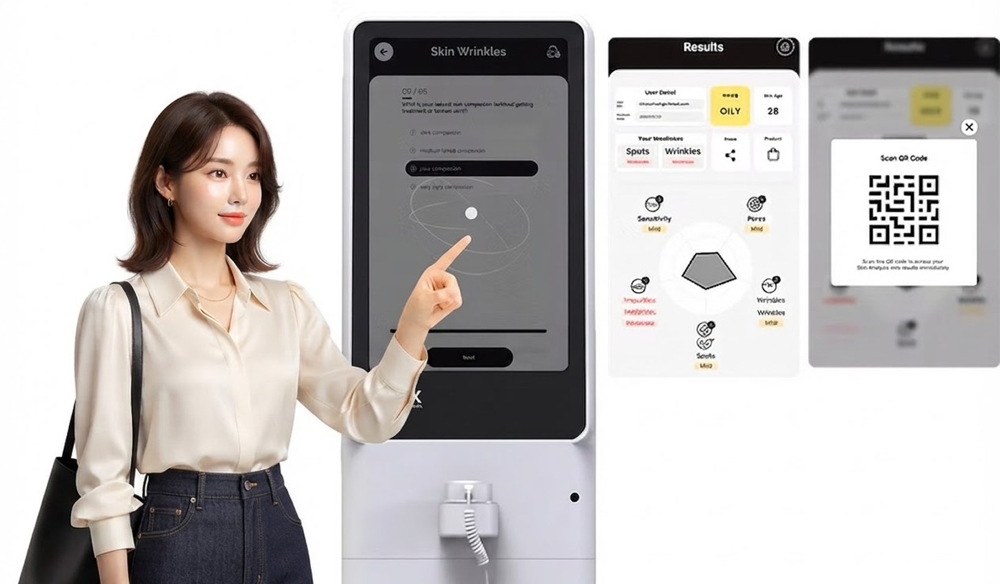
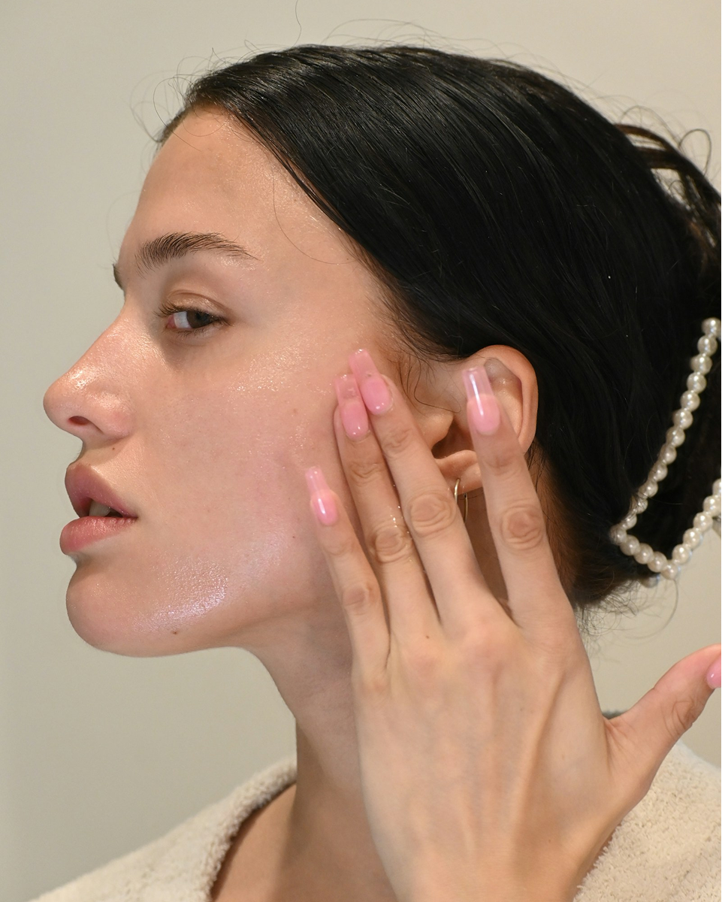
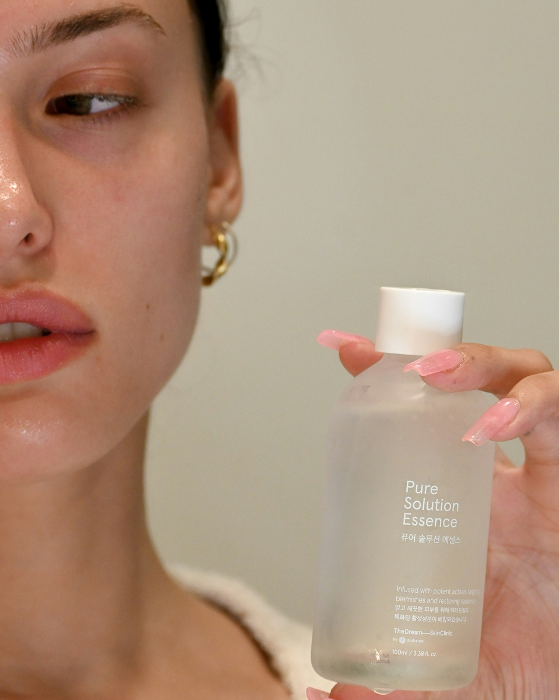

顾客的困扰并不会只停留在一个部位
顾客并不会把皮肤、头皮和毛发完全分开感受。有些顾客面部干燥，但头皮出油明显；有些顾客同时在意发质受损和皮肤敏感。
如果门店咨询只看皮肤或只看头皮，就可能忽略顾客真实困扰背后的整体背景。综合检测帮助顾问把顾客的美妆状态理解为一个连接起来的流程。
这并不是为了增加复杂的检测项目，而是为了建立一个能连接生活习惯、产品使用和复访咨询的参考标准。


仅靠皮肤检测可能遗漏的信号
水分、油脂、毛孔、肤色和弹性都是重要的皮肤指标。但这些指标有时无法完整解释顾客的整体状态。
例如，皮脂分泌较多的顾客，头皮也可能存在类似困扰。感觉干燥的顾客，也可能同时有头皮紧绷或发梢受损的问题。
当皮肤检测结果与头皮、毛发状态一起解读时，顾问可以提出更具体的护理方向。


头皮与毛发检测如何扩展咨询
头皮检测可以显示顾客不容易自行观察的信息，例如油脂、头屑、敏感度以及毛孔周围状态。毛发分析则可以支持关于受损度、光泽、粗糙感和护理需求的说明。
这些信息与皮肤检测连接后，咨询可以自然从护肤产品推荐扩展到护发、头皮护理和日常护理习惯建议。
顾客更容易理解为什么会被推荐某个产品类别，门店也可以设计跨品类的咨询体验。
为什么综合检测让产品推荐更准确
单一指标只能说明顾客状态的一部分。综合检测通过同时查看皮肤、头皮和毛发数据，帮助门店判断产品类别的优先级。
例如皮肤和头皮都偏敏感的顾客，可能更适合舒缓和平衡方向的产品，而不是使用感强烈的产品。皮肤干燥但头皮出油的顾客，则需要针对不同区域采取不同管理策略。
ChoiceDx 关注的是把这些结果整理成顾问可以使用、顾客可以理解的语言。
综合数据在零售门店中的价值
在 B2B 零售环境中，综合检测数据不仅是体验功能，也可以成为稳定咨询质量的运营标准。
门店可以在一次到店中理解顾客对皮肤、头皮和毛发的兴趣，并更自然地连接护肤与护发品类。品牌也可以根据顾客状态，更有说服力地解释产品线。
复访时，门店可以比较上次与本次结果，帮助顾客确认护理变化。这一流程还可以连接 CRM、会员体系和个性化活动。
ChoiceDx 观点
ChoiceDx 将皮肤、头皮与毛发综合检测视为面向美妆零售咨询的数据化体验，而不是医疗判断。
重点不是展示更多数据，而是把数据整理成顾客能理解、顾问能使用的结构。
对于化妆品品牌、B2B 零售商和美妆门店运营者来说，综合检测可以同时支持顾客信任、品类扩展和复访咨询。
FAQ
综合检测与皮肤检测有什么不同？
综合检测不仅查看皮肤，也会结合头皮和毛发状态，帮助门店理解顾客整体美妆状态。
每位顾客都需要皮肤、头皮和毛发三项检测吗？
不一定。门店可以根据顾客困扰选择相关检测区域，并保留结果用于后续比较。
ChoiceDx 综合检测是医疗诊断吗？
不是。ChoiceDx 提供的是用于美妆零售咨询和产品推荐支持的 AI 分析体验。